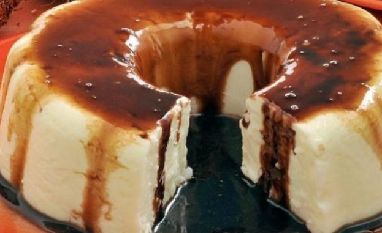

Delicioso e Fácil de Preparar!

Se você acha que não dá para fazer um doce delicioso com poucos ingredientes,
veja o manjar prestígio! É uma sobremesa fácil e que vai agradar a todos!
Manjar prestígio saboroso
Tempo de preparo:1h (+4h de geladeira)
Rendimento: 10 porções
Nível de dificuldade: fácil
Ingredientes:
- 1 litro de leite
- 1 vidro de leite de coco (200ml)
- 150g de coco fresco em flocos
- 1 lata de leite condensado
- 5 colheres (sopa) de maisena
Calda
- 2 xícaras (chá) de achocolatado em pó
- 4 xícaras (chá) de leite
Modo de preparo
Para a calda, em uma panela, coloque o achocolatado, o leite e leve ao fogo baixo.
Deixe ferver por 30 minutos ou até formar uma calda parecendo cobertura para sorvete.
Retire do fogo, deixe esfriar e reserve.
Em uma panela, junte os ingredientes do manjar e leve ao fogo médio, mexendo sempre
até cozinhar e engrossar. Retire do fogo e despeje em uma fôrma grande de buraco no
meio, decorada e umedecida, e leve à geladeira por 4 horas para firmar. Retire da
geladeira, desenforme em um prato de servir, regue com a calda e sirva.